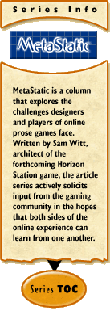

Crossing the Line
by Sam Witt
February 21, 2001
A while back, I was running around a Game That Shall Remain Nameless, and ended up in the middle of a rather heated argument. A friend of mine was standing near the gates to a city handing out goodies to passersby. "Merry Christmas," he said, pressing coins or the odd item of interest onto those who looked like they could use it, "and a Happy New Year."
"You shouldn't say that." The person speaking was an Authority in the game, and had apparently been watching the goings-on for a while. "There isn't any Christmas or New Year in this world."
I am a roleplaying fan. I enjoy it in many forms, from tabletop gaming to online worlds to pretending like I'm paying attention during meetings that bore me to tears. I plan on encouraging roleplaying in Horizon Station, and I wish more gamers felt like I do.
But this... this bugged me. Here was a guy doing his best to spread a little cheer and fun around, and the game staff was jumping down his throat for violating their fiction. It bugged me, not because the guy was a friend of mine being hassled by the Powers That Be, but because there was an implied conceit that the game had a reality of its own, completely isolated from the rest of the experience of its players.
The problem is that trying to draw a strict line between the 'real world' and the 'game world' doesn't work, and it can hamper the game rather than helping it. Intentionally designing a game to reject many of the things that resonate strongly with the players in their everyday lives doesn't help immerse people in your world, it raises a sense of unreality and detachment that is hard to ignore. I'm no cultural anthropologist, but I'd wager that the majority of societies that we, as players, are aware of have some sort of annual festival marking the change of the year.
It's easy to tailor your game around the real world, to incorporate fantastic versions of real events in order to help synchronize the experience of the players with those of their characters. Just as importantly, by drawing on the experiences of your player base, you can expand and detail aspects of your own world quickly and easily.
Holidays are not the only example of this, but they are the simplest. But everything from professional sports to politics can find their way into your world, masked by the particulars necessary to sustain the fiction. Had Horizon Station gone live six months ago, you can be sure that there would have been two competing artificial intelligences attempting to gain the confidence of the colonists, with the ultimate decision of who would run the show coinciding closely with the results of the real-world election.
Cleverly applied, the events of the real world help to foster roleplaying in your world, not hinder it. Used appropriately, these fictionalized accounts from the real world can provide dynamic content for your world, and keep things fresh. Players begin to look forward not only to the events in the world, but also the events that will coincide with them in your game.
Most importantly, the use of the world outside of your game helps your players relate to the game itself. The more strongly a player can relate to your world, the deeper her roleplaying, and at the end of the day, better roleplay makes for better games.
Now, click that link down there and tell me what a heretic I am for wanting to use the real world to make better game worlds. Go ahead, you know you want to.